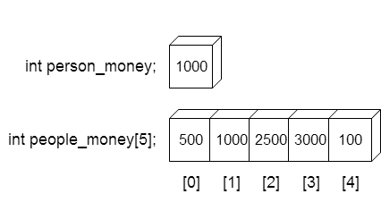
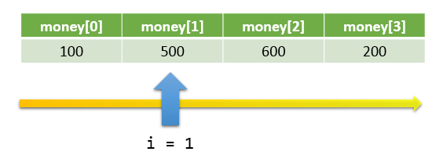

變數可以幫我們儲存一筆資料，非常方便；但是要儲存多筆資料的時候就顯得麻煩。
試想要記錄五個人在銀行的存款，若用只用變數宣告會寫成
int money1, money2, money3, money4, money5;
money重複出現好幾次！別忘了程式就是要協助人類解決大量重複的事情，當然有更好的方法可以用。

n 的陣列，可用資料為[0] ~ [n-1]， 共 n 個。100、200。不能是變數。資料型態 陣列名稱[陣列長度];
實際程式碼
int people_money[5];
陣列名稱[第幾格] = 數值;
cin >> 陣列名稱[第幾格];
cout << 陣列名稱[第幾格];
i，走過0, 1, 2, ..., 陣列長度-2, 陣列長度-1 讀取陣列中每一格的內容。
#include<iostream>
using namespace std;
int main()
{
int money[4];
int i;
money[0] = 100;
money[1] = 500;
money[2] = 600;
money[3] = 200;
i = 0;
while( i < 4 )
{
cout << i << " : " << money[i] << endl;
i = i+1;
}
return 0;
}
0 : 100
1 : 500
2 : 600
3 : 200
為什麼是 while( i < 4 ) 而不是 while( i <= 4 ) ？
陣列長度直接宣告成題目敘述的最大範圍就好，本題的陣列長度至少為1000
輸入要用到一次while，輸出也要用到一次while
第1列：整數N，代表接下來要輸入N個數字。 ( N <= 1000 )
第2列：N個整數。
依序輸出被輸入的N個整數，以空白隔開。
12
2200 1500 300 -800 600 1750 8220 6720 0 -450 720 3590
2200 1500 300 -800 600 1750 8220 6720 0 -450 720 3590
#include<iostream>
using namespace std;
int main()
{
int N;
int num[1005];
int i;
// input
cin >> N;
i = 0;
while( i < N )
{
cin >> num[i];
i = i+1;
}
// output
i = 0;
while( i < N )
{
cout << num[i] << " ";
i = i+1;
}
cout << endl;
return 0;
}
#include<iostream>
using namespace std;
int main()
{
int N;
int num[1005];
int i;
// input
cin >> N;
for( i=0 ; i<N ; i=i+1 )
{
cin >> num[i];
}
// output
for( i=0 ; i<N ; i=i+1 )
{
cout << num[i] << " ";
}
cout << endl;
return 0;
}